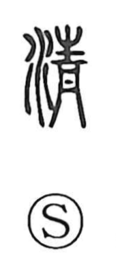

清

Uncategorized
Kun: kiyoi, kiyomaru, kiyomeru, kiyoraka, sumu | On: sei, sho, shin
pure ・ clean ・ to purify ・ to clear ・ clarity
Explanation
清 is a phono-semantic character. Its original form 淸 pairs the water element with 青, with 青 serving as the phonetic that signals the on reading sei. 青 names a blue‑green color once derived from cinnabar, a tone felt to be pure and tranquil. As the Shuowen says, the graph means “to become clear,” depicting water that has settled and turned limpid. From this image come senses such as water becoming clear (sumu), to clear or purify (kiyomeru), and, by extension, clarity and purity in a person or feeling—kiyoi, kiyoraka, akiraka.